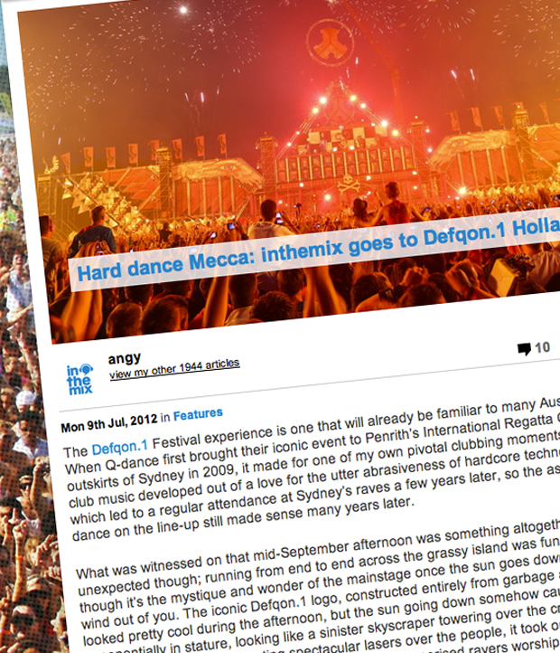

Hard dance Mecca: inthemix goes to Defqon.1 Holland
{kind=link}

The Defqon.1 Festival experience is one that will already be familiar to many Australian party-goers. When Q-dance first brought their iconic event to Penrith’s International Regatta Centre on the outskirts of Sydney in 2009, it made for one of my own pivotal clubbing moments. My first taste for club music developed out of a love for the utter abrasiveness of hardcore techno in the mid ‘90s, which led to a regular attendance at Sydney’s raves a few years later, so the assortment of hard dance on the line-up still made sense many years later.
What was witnessed on that mid-September afternoon was something altogether different and unexpected though; running from end to end across the grassy island was fun enough in itself, though it’s the mystique and wonder of the mainstage once the sun goes down that really takes the wind out of you. The iconic Defqon.1 logo, constructed entirely from garbage and metal scraps, looked pretty cool during the afternoon, but the sun going down somehow caused it to increase exponentially in stature, looking like a sinister skyscraper towering over the crowd. Spewing fire and smoke into the air, and shooting spectacular lasers over the people, it took on the grandeur of a wicked Mayan Temple that tens of thousands of mesmerised ravers worshipped at the foot of.
It came, it conquered, it kicked our asses. It was the first time Australia has witnessed that kind of spectacle, and everyone lucky enough to be in attendance left shaking their heads in disbelief for weeks afterwards over what they’d seen. After that, your average meat-and-potatoes Australian festival didn’t quite seem the same; and of course, the opportunity to experience the Defqon.1 Festival in its heartland of Holland is not one you’d pass up.
A dash of Dutch courage
For the first eight years it was staged in Holland, Defqon.1 was held on a beachside location in Almere outside of Amsterdam, one of the iconic aspects of the party that inspired the choice of the Regatta Centre island in Sydney, though it eventually grew well beyond what that location could cater for. This led to a relocation last year to the sprawling green fields of an event site in the village of Biddinghuizen, again around an hour outside Amsterdam.
To some degree you’d assume this would be trading some of what made Defqon.1 so unique, though fortunately, the site in Biddinghuizen brings a rural charm all of its own. The Defqon.1 Festival has evolved over the years into something of a three-day hard dance commune, with most of the main festival action taking place on Saturday, but with the camping and music stretching as far back as Thursday afternoon. It really does offer it a genuine community feel, with the camping aspect offering the party a somewhat similar feel to what you get when you pack up the car and trek out to Melbourne’s Rainbow Serpent or Sydney’s Subsonic Festival for the weekend. Except, the music has been ramped up an extra 20 to 100 BPMs.
Capacity wise, you’d estimate it to be around the size of a sold-out Big Day Out in Australia, definitely well upwards of 50,000 punters. The festival grounds are split into two main areas, with the first upon entry hosting the assortment of smaller stages, as well as all the selection of particularly tasty food options and extensive merchandise for the Q-dance obsessives. Walk through a thoroughfare on the north-eastern side of the grounds, and you reach the stupendous Red mainstage, with a set-up so sprawling that it doesn’t even fit in the feeble frame of your camera phone. However, these areas only really represent the centre of what is a much larger three-day festival; just take a peek at one of those aerial shots to get an idea of just how far the party stretches over the Biddinghuizen grounds, and how elaborate the event’s set-up is.
Though our travels saw us arriving in Amsterdam in time for the main party on Saturday, it wasn’t hard to get a sense of the bigger picture of the Defqon.1 Festival experience. Entering with some fairly high expectations to begin with, in the end these were all somehow exceeded, and in plenty of ways you wouldn’t expect either. Firstly there’s the observation of just how consistent it is with the Australian event that it’s inspired, and beyond that, while the blockbuster spectacle of the mainstage might be what the party is known for, in the end it only accounts for a small part of what makes the Defqon.1 Festival such an A-class event.
Saturday’s adventures
Arriving in the fields of green fields of Biddinghuizen early Saturday afternoon, we were greeted with sunny blue skies that luckily stuck around for the rest of the day, in contrast to the gloomy wet weather of Friday – though Holland’s regularly washed-out Awakenings techno partiesdemonstrate that it takes more than a little bit of water to stop the Dutch from enjoying a party. Walking up a set of stairs through an elevated, enclosed industrial walkway that felt like something out of Mad Max, you were led to the entry gates, where a rather curious-looking machine attached a cloth wristband, tightening it softly around your wrist before shearing the ends to seal it in a perfect fit. It was smooth sailing from this point on.
Looking around after entering, there was Defqon.1’s trademark steam-punk art scattered everywhere. Giant robots built out of scrap metal, huddled graveyards of burnt-out cars, entire stages seemingly constructed out of rusted metal. Defqon.1’s thematic motif revolves around the post-apocalyptic notion of using garbage and scrap metal to build a new future, but Australian attendees will be well aware of this attention to detail already, and the extensive visual and creative consistency that can be seen in every corner of the event.
The majority of the afternoon, prior to sundown, was spent running around and checking out the assortment of smaller stages on the southern side of the festival. There were so many places to go, so many things to see and so much fun to be had, with 12 stages to explore in addition to what was being blasted out over at the mainstage.
The Orange Stage made for a particularly good place to lose yourself from 3pm onwards, the DJs performing within a massive 20-metre wooden Viking boat built on stage in their honour. The medieval boat hosted a particularly fine selection of tech and hard trance DJs, with veterans likeScot Project representing as well as polished performers like Fausto, Alex Kidd and Kutski all showing what formidable technical talents they are, throwing down rocking sets. Later in the evening, old-timers Organ Donors and A*SY*S had little trouble pumping up the crowd.
The Ultra Violet Stage just next door sported one of the more elaborate set-ups of the minor stages, hosting a shade of hardstyle that was a tad tougher than what was being played on the mainstage, with Nitrouz and The Prophet headlining the proceedings later in the day. The tent was held up by several columns, all plastered with a variety of street signs, construction warnings and traffic lights, while your eyes were otherwise drawn to massive ‘STOP’ sign hovering above the stage, flanked by with a circle of flashing lights.
Similar attention to detail could be seen across all the other minor stages, each boasting its own unique look and feel. The Silver Stage, featuring an assortment of speedcore and freeform performers throughout the day, was an artificial warehouse constructed out of three long sheets of corrugated iron, bent in a half-cylindrical fashion over the long dancefloor platform, with a whole heap of mirror-balls hanging from the ceiling.
The punters who’d travelled to Defqon.1 to enjoy the aggressive hardcore sounds of the Black Stage were definitely treated to an impressive set-up this year. It was manned by stalwarts like Promo and the Neophyte Records Allstars collective, and while the hardcore scene might keep a relatively small profile, it nonetheless boasts a following that’s as dedicated and militant as any you’ll find across dance culture. The stage design was essentially the same iconic three-pronged Defqon.1 logo that awestruck the crowd at the debut Australian event, though this time it was constructed from a massive hollow frame of wire mesh, with flashing lights placed at every intersecting point. When the sun went down, its pulsing yellow light could be seen all the way over at the mainstage, and it was a spectacular sight to behold.
One of the more interesting detours of the afternoon was a visit to the Green Stage, sporting a military-inspired design with plenty of cammo nets draped all over the place, and some rather excellent bangin’ techno pumping out of the speakers. It’s a style of dance music that seems to come naturally to the Dutch. While Holland might be known more worldwide for its trance DJs and producers, techno remains one of its most popular choices for local clubbers.
The stage wasn’t rammed, but the tunes were pumping, and the energy coming off the crowd truly was infectious; bouncing around and dancing without a hint of inhibition. Not that this was restricted to the Green Stage, by any means. These same wide, beaming smiles, joyous dancing, and general tendency to embrace the experience for everything that it was worth could be seen in every corner of the festival.
Every country seems to enjoy clubbing in their own unique way. For instance, the Spanish are infamous for their love of the hedonism, reflecting their own passion for all the good stuff that life has to offer. Elsewhere, the Germans have a heads down, ‘serious business’ approach that’s reflected in the high standards of their creative output. The Dutch are something else, though; the exuberant, bristling energy coming off that crowd was some of the most exhilarating and inspiring I’ve ever been amongst, and it’s something that has to be witnessed to be believed. The communal energy that emanates from tens of thousands of people having a fucking awesome time can really make a festival, and it’s something you can feed off.
Beyond the spectacle, the attention to detail, excellent organisation and thematic consistency of Defqon.1, it was the energy bubbling off the crowd that left the biggest impression. It’s a better stimulant even than those turbo-powered energy drinks being sold at the bars, estimated loosely to be around ten times stronger than your average can of Red Bull. Those crazy Dutch.
The big finale
If the festival’s smaller stages offered a wealth of unexpected delights during the day, there was still only one place that you wanted to be when the sun went down; parked in front of the colossal set-up of the Red Stage, a gargantuan construction that what would have accounted for a gargantuan production budget, as well as an equal amount of design ingenuity.
The hardest task Q-dance has on its hands every year is being able to top the grandeur of the previous event’s spectacle. Each edition features a different design, all of them suitably overblown, but some more iconic than others. The Defqon.1 logo that featured in the debut Australian edition was definitely one of the most memorable, and last year’s design in Holland was also a corker; a towering king on a throne, adorned with a thorned devil’s crown, spewing smoke and blasting lasers into the crowd. It was a concept that was repeated at Q-dance’s US debut at the Electric Daisy Carnival in Las Vegas this year, and it was always going to be a hard act to top – though they went for a completely different approach in 2012.
This year’s stage likely stretched longer than any in the past. Dominated by a giant steel pyramid in the middle, a Defqon.1 symbol covered in lights was placed in its peak, and a skull and crossbones at its base housed the DJ booth. There was a line of photos of Q-dance’s regular DJs stretching across the pyramid’s middle, painted like you’re looking through a steel-glass window, heightening the mock-religious feel of the stage. Flanking each side of the pyramid from around half way up its base was a long steel wall, each spotted with Defqon.1 flags and adorned with feathers and a bird’s eye, to give it the look of some kind of bizarre structure that was about to sprout wings and lift upwards towards the sky.
Cutting-edge hardstyle titan Headhunterz, who’d closed the mainstage at Australia’s Defqon.1 in 2010, was in control from 8.30pm as dusk was setting in, eventually handing over the controls to Belgian heavy Coone at 9.30pm for the enviable task of bringing the party to a close. That was until when Coone himself handed the reigns over to the infamous ‘End Show’: a meticulously-planned 30 minute medley of music, spectacle and special effects that’s akin to the Sensation parties’ famous ‘Release’ moments.
This year, there was an extra dose of drama involved. As the half hour began, LCD displays stretching across the center of the pyramid lit up to form a digital display, counting down from 20 with a dramatic Q-dance voiceover to match. When it reached zero, two massive flame-throwers spewed fire into the sky on either side of the crowd. And then again, the countdown returned to its starting point, squeezing every last drop of tension from the crowd until it again reached zero, when a magnificent blast of green lasers exploded over the crowd. And yet again, the countdown was re-set; only this time resulting in fireworks shooting into the sky.
Over the next half hour we were treated to a mind-numbing audio-visual assault. Just when you thought you’d seen it all, the centerpiece was revealed. That suspicious-looking crane that had been parked in the distance behind the stage began to move, lifting into the air what turned out to be a massive steel Defqon.1 logo. Its circular frame spewed sparks from all angles, joined by the additional sparks that were erupting into the sky along the length of the stage, the green lasers pitching out into the air, flame-throwers exploding on either side of the crowd and the fireworks going off above them. Excess, thy name be Defqon.1 Festival.
A hard day of hard dance
By the time tens of thousands of punters began to stream back to the campsite, and onto buses back to Amsterdam, the day had delivered in every possible way; some ways that were expected, and some not so expected. Everyone expects crazy spectacle at a Q-dance event, but what really surprised was how much fun there was to be had at the smaller stages of the festival, in what was essentially a parallel universe created especially for the event. Even more so, the way the Dutch hardstyle lovers embraced the experience in ever possible way. So much love and creativity had gone into the execution, and the crowd responded in kind.
The frenetic BPMs of hard dance are often be scoffed at by the different quarters of dance music. After attending Defqon.1 Festival 2012 in Holland though, beyond the fact the music is a lot more polished and clever than it’s given credit for, and that it sports one of the most sophisticated and musically educated crowds you could ever hope to party amongst – anyone who thinks they’re too good to hit up a Defqon.1 Festival hasn’t a clue what they’re missing on. So much fun borders on criminal.